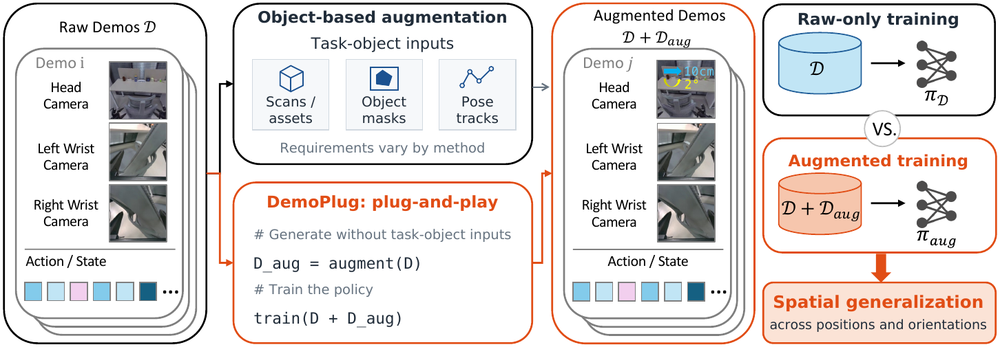
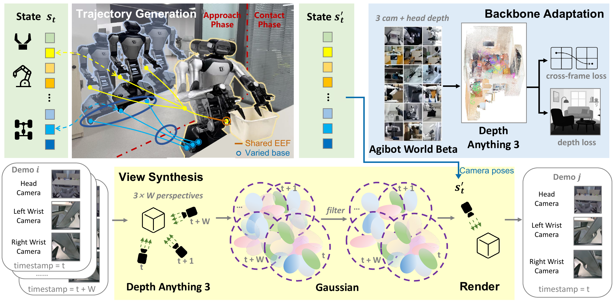
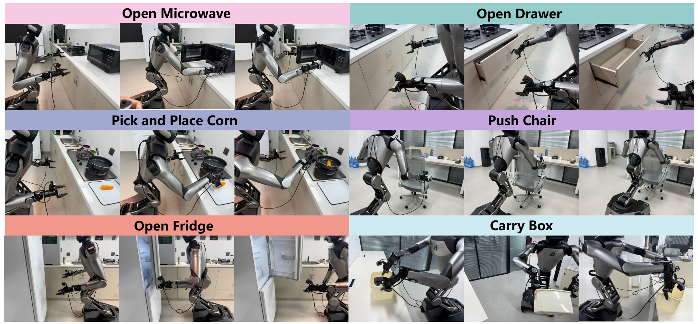
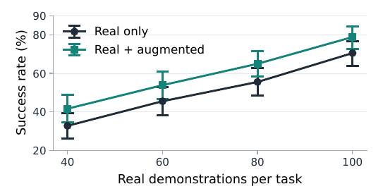
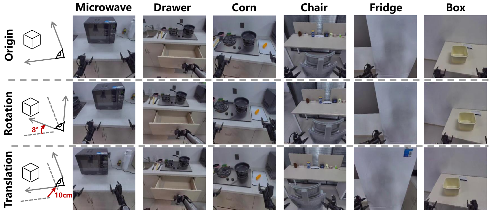
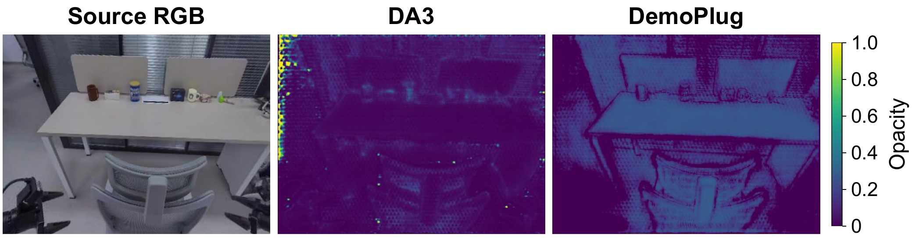

Everyday tasks require robots to travel to different locations and manipulate objects from varied positions and orientations. These spatial variations affect both observations and actions, while collecting demonstrations for every configuration is costly. DemoPlug is a plug-and-play spatial demonstration augmentation framework. It preserves continuous demonstrated interactions while changing robot execution, allowing recorded object motion and appearance to provide visual content for new demonstrations. The method generates base and joint trajectories that follow the original world-frame end-effector references, updates camera poses from the generated robot motion, and pairs rendered views with states and actions from the same trajectory. It augments robot configurations without independent task-object assets and can optionally vary object poses when editable assets are available. Across six R1 tasks and four demonstration budgets, augmentation improves mean success by 8.3--9.4 percentage points. Additional experiments cover a mobile UR5, Diffusion Policy, object-pose augmentation, and a mobile-adapted RoboSplat comparison.

The demonstrated end-effector interaction remains the reference. DemoPlug generates alternative base and joint trajectories, then renders the corresponding observations in the same training format.
The trajectory generator and visual renderer are connected by robot kinematics, relative camera updates, and synchronized states and actions. The policy architecture and training interface remain unchanged.
The optional object extension adds editable robot and task-object assets only when object placement is varied.

DemoPlug segments demonstrations using the recorded base and arm motion, preserves continuous interaction references, samples feasible base configurations, and solves the corresponding joint motion with kinematics and collision checks. An adapted and frozen Depth Anything 3 backbone reconstructs per-frame Gaussian scenes from synchronized camera windows. Relative camera-pose updates render views for the generated robot motion, while synchronized state and action recomputation keeps every generated frame aligned with the policy input format.
With editable robot and object assets, the same construction also transfers an interaction to a new object pose. This optional extension changes the object and its continuous end-effector reference together, while the surrounding scene content still comes from the demonstration reconstruction.

Six R1 tasks span base and arm coordination: opening a microwave, opening a drawer, picking and placing corn, pushing a chair, opening a refrigerator, and carrying a box. We additionally evaluate a mobile UR5 with an external base-mounted camera and a wrist camera.
Evaluation uses 30 distinct, well-separated robot starts per task: 20 interpolation configurations and 10 configurations outside the position-heading coverage of the complete 100-demonstration corpus. Raw and augmented policies use the same source demonstrations and matched trial locations.
| Task | 40 demos | 60 demos | 80 demos | 100 demos | ||||
|---|---|---|---|---|---|---|---|---|
| Raw | DemoPlug | Raw | DemoPlug | Raw | DemoPlug | Raw | DemoPlug | |
| Open microwave | 9/30 | 12/30 | 15/30 | 17/30 | 19/30 | 20/30 | 23/30 | 25/30 |
| Open drawer | 13/30 | 16/30 | 15/30 | 17/30 | 19/30 | 22/30 | 24/30 | 27/30 |
| Pick-place corn | 10/30 | 12/30 | 13/30 | 15/30 | 16/30 | 19/30 | 22/30 | 23/30 |
| Push chair | 10/30 | 14/30 | 15/30 | 18/30 | 16/30 | 21/30 | 22/30 | 24/30 |
| Open refrigerator | 12/30 | 15/30 | 16/30 | 20/30 | 20/30 | 23/30 | 23/30 | 26/30 |
| Carry box | 5/30 | 6/30 | 8/30 | 10/30 | 10/30 | 12/30 | 13/30 | 17/30 |
| Mean success (%) | 32.8 | 41.7 | 45.6 | 53.9 | 55.6 | 65.0 | 70.6 | 78.9 |

On drawer opening and corn pick-and-place, the optional object extension reaches 17/30 and 15/30, compared with 16/30 and 13/30 for mobile-adapted RoboSplat. DemoPlug prepares the R1 robot and task object assets in 35 minutes, versus 90 minutes for the full RoboSplat mobile adaptation.
| Method | Drawer | Corn | Mean |
|---|---|---|---|
| Image augmentation | 12/30 | 10/30 | 36.7 |
| RoboSplat | 16/30 | 13/30 | 48.3 |
| DemoPlug | 17/30 | 15/30 | 53.3 |
On the mobile UR5, the same augmentation procedure improves both π0.5 and Diffusion Policy on drawer opening and corn pick-and-place. The method retains the platform-specific robot model, camera interfaces, and policy training format.
| Task | Policy | Raw | DemoPlug |
|---|---|---|---|
| Corn | π0.5 | 12/30 | 16/30 |
| Drawer | π0.5 | 15/30 | 20/30 |
| Corn | DP | 8/30 | 13/30 |
| Drawer | DP | 10/30 | 14/30 |

The source interaction remains visible while the camera pose follows the generated robot motion. Across all views and phases, the robot projection discrepancy averages 0.5% in area and 1.1 pixels in image-plane displacement.
Held-out-view rendering improves from 18.53 dB PSNR with an off-the-shelf backbone to 25.13 dB after adaptation. The optional object extension transfers the object pose and its continuous end-effector reference together.

Each strip shows rendered head-camera views under a changed base configuration while preserving the recorded interaction.
Base-yaw variation
Base-translation variation
Additional task views
Real-world deployment examples from policies trained with DemoPlug demonstrations. Each clip shows execution from a spatial configuration distinct from the source demonstrations.
Now showing: Push chair
DemoPlug: Plug-and-Play Demonstration Augmentation for Spatially Generalizable Manipulation